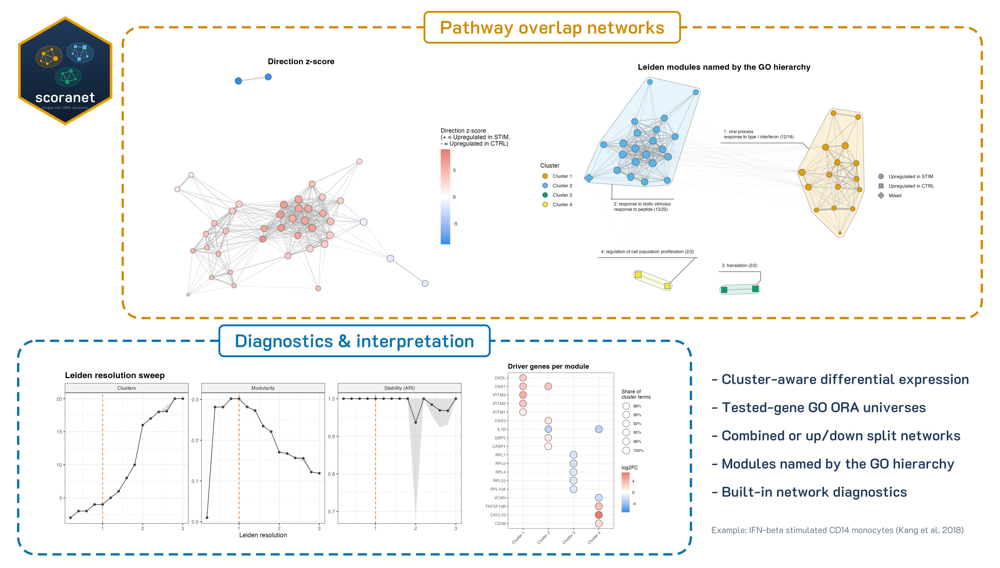

Single-Cell Over-Representation Analysis NETworks
Clean, interpretable alternatives to traditional functional enrichment results at the single-cell cluster level.


[!WARNING] 🚧 In development: functions and defaults may still change between versions.

Installation
Install the Bioconductor dependencies first if needed
if (!requireNamespace("BiocManager", quietly = TRUE))
install.packages("BiocManager")
BiocManager::install(c("clusterProfiler", "GO.db", "AnnotationDbi", "org.Mm.eg.db"))Then install the latest version from Github
install.packages("devtools") # if not already installed
library(devtools)
devtools::install_github("mikemartinez99/scoranet")
library(scoranet)Overview
Single-cell experiments often produce hundreds of differentially expressed genes per cell type, and gene ontology (GO) over-representation analysis on those genes can return dozens of overlapping, redundant terms. scoranet (Single-Cell Over-Representation Analysis NETworks) turns that list into a map of biological programs to help make sense of your results!
[!IMPORTANT] scoranet is compatible with Seurat v4 and v5!
For each cell type, scoranet:
Tests for differential expression between two conditions within each cluster
Runs GO over-representation analysis on the DEGs, optionally using only the genes that were actually tested as the background, and optionally splitting up- and down-regulated genes.
Builds a pathway overlap network, connecting GO terms that share DE genes via Jaccard similarity index, and groups them into modules with Leiden clustering.
Names each module using higher-level terms from the GO hierarchy, and colours terms by whether their genes go up, down, or both.
Checks the settings with built-in diagnostics for the overlap threshold, Leiden resolution, and the genes driving each module to help you fine-tune your figures and biological interpretation.
All plots are returned as editable ggplot2 objects, and every table is written to disk.
Dependencies
CRAN: Seurat, cli, dplyr, ggforce, ggplot2, ggraph, ggwordcloud, igraph (>= 2.1.0), patchwork, scales, stringr, withr
Bioconductor: clusterProfiler, GO.db, AnnotationDbi, and an organism annotation package (org.Mm.eg.db for mouse or org.Hs.eg.db for human)
Usage
For a full demo, see Interferon-beta stimulated PBMCs (Kang et al. 2018)
For a guide to reading the diagnostic figures, see DIAGNOSTICS.md
Change-log
October 17th, 2026: “The network update”
- Renamed from GDSCtools to scoranet and focused the package on the DE → ORA → network workflow
- run_cluster_de returns DEGs and all tested genes per cluster, with explicit Seurat FindMarkers pre-filters and Seurat 5 support
- run_go_ora supports tested-gene universes, up/down split analysis, and optional term simplification
- run_comparison_networks builds seeded Leiden networks (modularity objective) with z-score direction calls
- Added ggraph network plots: direction, Leiden clusters, z-score, and cluster themes named by the GO hierarchy
- Added diagnostics: Leiden resolution sweep, overlap threshold, driver genes, and comparison overview
- Added write_de and write_go (replacing write_de_results)
- Added unit tests and the interferon-beta PBMC vignette
AI Use Disclosure
Parts of this package’s code, tests, and documentation were developed with the assistance of Claude (Anthropic), an AI assistant. All AI-assisted work was reviewed, tested, and edited by the author, who takes full responsibility for the package.